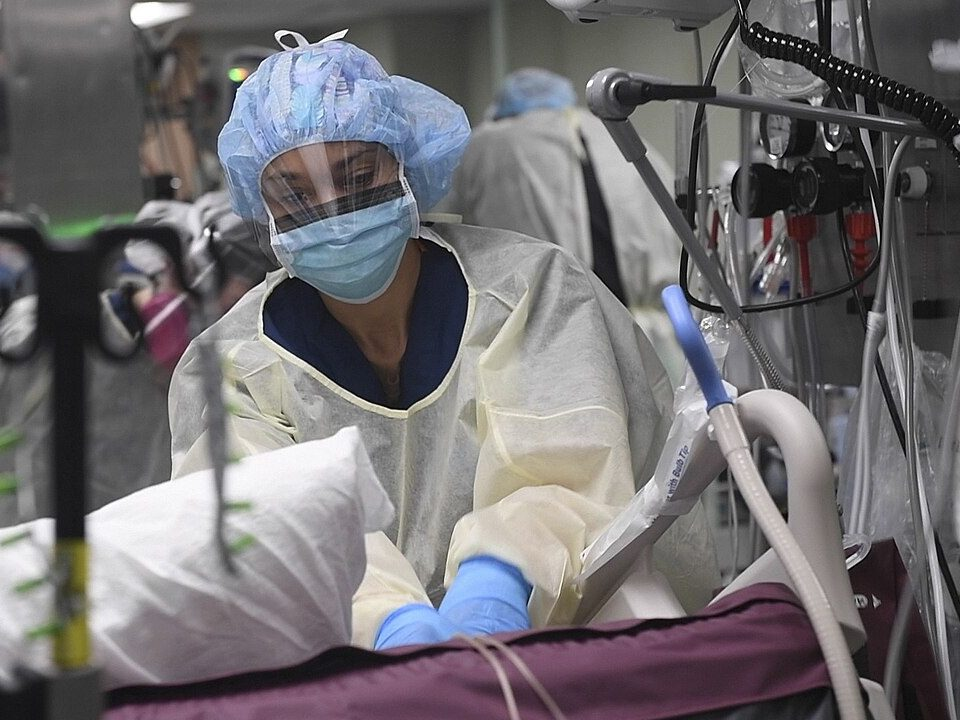

Sujeciones y contenciones
Las sujeciones físicas y la contención farmacológica limitan la libertad de la persona y tienen riesgos graves. Solo se justifican como último recurso, cuando han fallado las alternativas y hay un riesgo grave para la propia persona o para otros, y durante el menor tiempo posible.
Revisado en noviembre de 2026 · Fuentes al final de la página


Marco ético y legal
- La Instrucción 1/2022 de la Fiscalía General del Estado establece que la contención es excepcional, debe estar justificada, indicada por un médico, ser proporcional, durar lo mínimo, vigilarse y registrarse, y que los centros deben avanzar hacia su eliminación.
- Hay que informar a la persona y a su familia o representante, y respetar su dignidad e intimidad.
- Muchos centros tienen programas «sin sujeciones», que han demostrado que es posible reducirlas mucho sin aumentar las caídas graves.
Alternativas, antes que nada
- Buscar y tratar la causa de la agitación: dolor, retención de orina, estreñimiento, infección, delirium, efectos de fármacos (ver delirium).
- Desescalada verbal: hablar con calma, escuchar, no discutir, reducir estímulos.
- Acompañamiento de la familia, rutinas, camas bajas, sensores de movimiento, protectores de cadera.
Si es imprescindible: contención mecánica
- Indicación médica (en una urgencia puede iniciarla la enfermera y se comunica de inmediato al médico para que la valore).
- Equipo suficiente, idealmente cinco personas: una para la cabeza y una por cada extremidad, con un coordinador.
- Material homologado y en buen estado. Paciente en decúbito supino con la cabecera algo elevada. Nunca en decúbito prono ni con presión sobre el tórax o el cuello.
- Revisar que las sujeciones permiten pasar un dedo y no comprimen.
Vigilancia y registro
- Vigilancia frecuente y presencial, con mayor frecuencia en las primeras horas: constantes, respiración, circulación de las extremidades, piel, hidratación, eliminación y nivel de consciencia.
- Liberar cada extremidad periódicamente y cambiar de postura según protocolo. Prevención de la trombosis venosa si está pautada.
- Reevaluar la indicación de forma continua y retirar en cuanto sea posible.
- Registrar el motivo, la hora de inicio y de retirada, quién la indica, las alternativas probadas y cada control.
Riesgos: asfixia, broncoaspiración, trombosis, lesiones de piel y nervios, más agitación y delirium, pérdida de movilidad y, en ancianos, más caídas graves al intentar soltarse.
Fuentes
- Fiscalía General del Estado. Instrucción 1/2022, de 19 de enero, sobre el uso de medios de contención mecánicos o farmacológicos en unidades psiquiátricas o de salud mental y centros residenciales y/o sociosanitarios de personas mayores y/o con discapacidad. BOE n.º 36, de 11 de febrero de 2022. www.boe.es
- Comité de Bioética de España. Consideraciones éticas y jurídicas sobre el uso de contenciones mecánicas y farmacológicas en los ámbitos social y sanitario. 2016. comitedebioetica.isciii.es